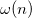
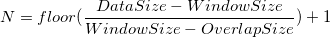
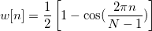
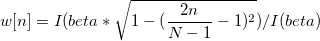

![STFT\left \{x[n]\right \} \equiv X(m, \omega)=\sum_{n=-\infty}^\infty x[n]\omega [n-m]e^{-j\omega n}](../images/Algorithm_(STFT)/math-b7782b6d6de5c1237e94d47beca08bcb.png "STFT\left \{x[n]\right \} \equiv X(m, \omega)=\sum_{n=-\infty}^\infty x[n]\omega [n-m]e^{-j\omega n}")
Eine STFT teilt ein Eingabesignal, {ix(n)}, in N Abschnitte gemäß dem Schiebefenster und führt eine FFT für jeden der Abschnitte durch. Es kann wie folgt berechnet werden:
wobei

das Schiebefenster repräsentiert, das die lokalen Frequenzkomponenten in ihm hervorhebt.
STFT wird mit dem folgendem Verfahren berechnet:
/STFT_algorithms_overlap.png)
Das Ergebnis der STFT ist eine Matrix, die N Zeilen und M Spalten hat, wobei

und
/math-59e9a587d2252885aae75c225885eb51.png "M= \begin{cases} FFTLength/2+1, & \mbox{if input signal is real} \\ FFTLength, & \mbox{if input signal is not real} \end{cases}")
Die j-te Spalte in der Matrix stellt das FFT-Ergebnis des j-ten Abschnitts des Eingabesignals dar und der X-Wert dieser Spalte ist die Zentrumszeit des j-ten Abschnitts. Die Y-Werte der Frequenz wird durch das Abtastintervall /math-5a72f1304af0783657605aed0e38201a.png "\Delta t") und die Anzahl der Eingabedatenpunkte N erstellt. Die i-te Frequenz ist gegeben durch:
und die Anzahl der Eingabedatenpunkte N erstellt. Die i-te Frequenz ist gegeben durch:
/math-50aa7a12fb8c13db0f687048c53d8b89.png "f_i=\frac i{N\Delta t}")
Über die automatische Berechnung des Abtastintervalls:
Wenn <Auto> für das Abtastintervall ausgewählt wird, wird das in der Berechnung erforderliche Abtastintervall automatisch von Origin berechnet.
Das automatisch berechnete Abtastintervall ist das durchschnittliche Inkrement der Zeitsequenz, die normalerweise aus der X-Spalte kommt, die mit dem Eingabesignal verbunden ist. Gibt es keine verbundene X-Spalte, werden die Zeilennummern verwendet. Beachten Sie, dass das Abtastintervall auf 1 gesetzt wird, wenn Origin das durchschnittliche Inkrement nicht erhält.
Fenster
Legt den von der FFT verwendeten Fenstertyp fest. Die Standardoption ist Hanning.
![w[n] = \begin{cases} 1, & \mbox{if }0 \leq n \leq N-1 \\ 0, & \mbox{otherwise } \end{cases}](../images/Algorithm_(STFT)/math-1dff02816a08f5abee4db570718fae2e.png "w[n] = \begin{cases} 1, & \mbox{if }0 \leq n \leq N-1 \\ 0, & \mbox{otherwise } \end{cases}")
![w[n]=1-\left[ \frac{n-\frac 12(N-1)}{\frac 12(N+1)}\right] ^2\,\!](../images/Algorithm_(STFT)/math-6e73eab9df4bcc92805e0be4ccc831c1.png "w[n]=1-\left[ \frac{n-\frac 12(N-1)}{\frac 12(N+1)}\right] ^2\,\!")
/math-0301923ac9ba030df614e6d597b61aca.png "w(n)=\frac 2{N+1}(\frac {N+1}2-|n+1-\frac {N+1}2|)")
/math-8e83f30fc0b782e1d8b13c070ff8819d.png "w(n)=\frac 2N(\frac N2-|n+1-\frac {N+1}2|)")
![w[n]=\frac 2{N-1}\left[ \frac{N-1}2-\left| n-\frac{N-1}2\right| \right] \,\!](../images/Algorithm_(STFT)/math-e66a9f4dcc74b3ab6be533c1c74db331.png "w[n]=\frac 2{N-1}\left[ \frac{N-1}2-\left| n-\frac{N-1}2\right| \right] \,\!")

![w[n]=0.54-0.46\cos (\frac{2\pi n}{N-1}) \,\!](../images/Algorithm_(STFT)/math-b6803ad49e62341c7d027fda8b337cb8.png "w[n]=0.54-0.46\cos (\frac{2\pi n}{N-1}) \,\!")
![w[n]=0.42-0.5\cos (\frac{w\pi n}{N-1})+0.08\cos (\frac{4\pi n}{N-1}) \,\!](../images/Algorithm_(STFT)/math-53be39cb73653898ae42aa3e07614275.png "w[n]=0.42-0.5\cos (\frac{w\pi n}{N-1})+0.08\cos (\frac{4\pi n}{N-1}) \,\!")
![w[n]=exp(-0.5(Alpha( \frac{2n}{N-1}-1 ))^2) \,\!](../images/Algorithm_(STFT)/math-fab7a042f67f1dfb6dc5556e228508ec.png "w[n]=exp(-0.5(Alpha( \frac{2n}{N-1}-1 ))^2) \,\!")

Ergebnisse
/math-12ec70533ced68ec298d82a8c5ab34e7.png "20\text{log}(\text{Amplitude})")
Zeit
Die Zeit von jedem FFT-Abschnitt im STFT-Ergebnis entspricht der Mitte des Zeitintervalls für das Signal jedes Abschnitts. z.B. für ein Abschnittsintervall (ti, ti+(N-1)*dt) ist die Zeit seines FFT-Abschnitts im STFT-Ergebnis: ti+(N-1)*dt/2.